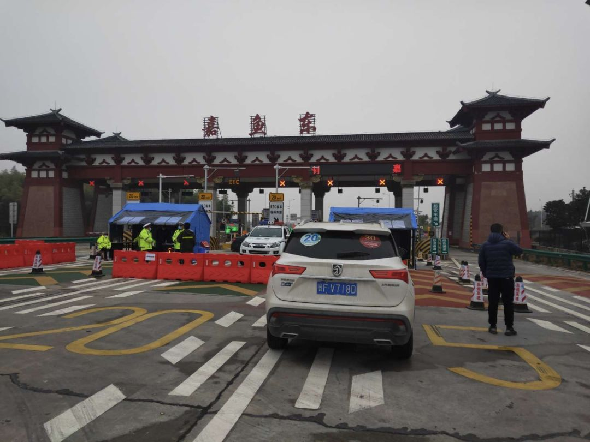
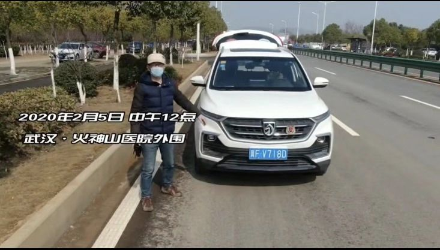

援助武汉周边地区的志愿者们
原文链接 备份链接 医院人员领取志愿者送的医疗物资。受访者供图 文 | 李晓芳 编辑 | 胡大旗 新型冠状病毒肺炎疫情扩大后，湖北省内的医院医疗物资告急。从1月23日开始，很多医院自行发布物资募捐公告。几乎同一时间，各种民间力量行动起来， …

个体救援，也是新冠肺炎疫情的重要救援力量，从农民工到退伍军人，他们以杯水尝试灭熄瘟疫之火，很多人甚至都没有留下姓名。大年初五，私家车主雷鹏驾车16小时急行1100公里，直抵武汉，成为了一名救援志愿者。
这是真实故事计划第 548 个故事
故事时间：2020年
故事地点：武汉

夜里23点29分，高速公路空荡如时空隧道，远处灯光鬼火一般地忽闪，雷鹏打开车内音响，一首首连放Beyond，给自己壮势。1月27日傍晚，他从河北保定出发，准备跨越3个省，自驾1100公里到武汉。此时车子已驶出400公里，遇到的车还不到30辆。路途过于冷清，对将要抵达的前方，这个47岁的男人产生了不寒而栗的感觉。
雷鹏是硬着头皮上路的。临要出门，他才在饭桌上吐露，自己要去疫区当志愿者。父亲怒斥他一意孤行，母亲直接给正在娘家照料老人的儿媳妇拨去电话，让她赶快劝劝雷鹏。
劝说和呵斥都不会起到任何作用，雷鹏早就收拾好简单的行李——几件换洗衣裳、一台相机、不多的现金。前夜，他还特意早早睡下，保证第二天有充沛的体力。
自1月22日，睡前看疫情地图成了雷鹏的习惯。雷鹏祖籍在湖北黄冈浠水县，常开车到湖北探亲访友，疫情地图上深浅不一的红色斑块，于他而言，则是一条条有具体印象的、熟悉的街道。不断上涨的新增病例看得他心里发慌，除夕刚过，黄冈老家的医院也开始紧急求援，雷鹏瞬时坐不住了。在网上，他以“湖北 志愿者”为关键词检索，将搜寻到的志愿者组织逐个联系了一遍。
因湖北各市封城封路，异地志愿者难以通行，雷鹏发出的消息均无后文。1月26日，终于有人与他联络，同意接收异地志愿者。对方发来一张印有武汉红十字会标识的通行证照片，告诉雷鹏，如路上遇到通行问题，可随时打电话，他们会帮忙沟通。
那几天，雷鹏接收到的疫情信息是芜杂的，而这个抛来橄榄枝的组织正被卷在舆情中心，网友各有说法，真相掖掖藏藏。雷鹏打算主动求索，他相信，要亲眼见证，才能在谣言漫天飞的信息网中抓住最真实的东西。
年轻时雷鹏当过炮兵，一九九八年张北地震，他想去救援，因部队有其他指令未能前行。这一次，他决心抓住机会，无论如何也要到疫区前线去。
这趟行程原本有个同伴。雷鹏开宝骏车，听说自己要去武汉疫区做志愿者，宝骏车友会的一个哥们与他约定同行。但因哥们的家人强烈反对，最终，二人出征变成他独自上路。
次日中午，车子驶进武汉蔡甸区，被交警拦下了。几番磋商，交警得知雷鹏是从河北跑来做志愿者的，说了一堆感谢的话，但无论什么理由，就是不准过。大概是为了回报雷鹏的善意，站在一旁观望的陌生人拉住雷鹏，悄悄给他指了另一条未设关卡的路径。
夜行时的人烟寥落，雷鹏只感到新奇，凌晨1点他路过黄河畔，还兴奋地拍了段视频发到朋友圈。现在，眼前超现实的情景让他有些害怕了。若非亲身体验，他绝不会相信这是在武汉的主干道上奔驰，进入市区、停车、与志愿者组织接应，整个过程，所见行人也不过百人。

图 | 武汉街头，清洁工正戴着口罩扫地
到了志愿者的工作据点，雷鹏想先在周边找个便宜的小宾馆安顿下来，随即发现，任何规模的宾馆、酒店均不接待外地人。昔日人头攒动的商业街这会儿静得诡异，沿街的商铺都紧闭着卷帘门，整条街，只有一家早餐店还开着。
迅速蔓延开来的病毒，好似按动了某个开关，将这座千万级人口的都市变成另一座城，萧条又陌生。

抵达武汉的第一晚，没寻到住处的雷鹏干脆待在志愿者休息室，陪几名志愿者值了个夜班。隔天，组织里一个叫萧萧的女孩，帮忙联系到武昌区的一家青年公寓。老板说，可以免费为从外地赶来的志愿者提供10间住房，直至疫情结束。
拉着行李搬到暂时的居所，脱下鞋袜，雷鹏被自己的脚臭熏得头疼。他已经两天没脱鞋了。

图 | 工作间隙，雷鹏在吃盒饭
雷鹏被分配至物资组，负责装卸货物，清点登记。不到9点，一拨拨运送物资的车接踵而至，将临时改为仓库的办公大厅填满又搬空。傍晚未过，雷鹏就见到近十种不同类型的车辆，消防车、救护车、城管巡逻车、政府公务车、卡车，还有一辆喷着“武装押运”字样的运钞车，装了满车散件口罩离去。
新鲜、兴奋的感觉很快替代了慌乱，每见到新的车型，雷鹏就会拍视频和照片发到车友会的群里。
车友们看到雷鹏发来的视频，调侃说，来到武汉后，雷鹏突然从一个喷子变成了正能量的传播者。只是未加入志愿者车队，雷鹏的爱车“大白”没机会出风头了。
其实相比车，雷鹏更在意坐在驾驶室里那些赤诚的司机。一位司机从江苏徐州出发，开了12小时的车，送来几百箱防疫物资，自己却只戴着一层薄薄的一次性口罩。还有位热心的武汉市民，看到志愿者们裸手搬运物资，送来了一千双劳保手套、两箱护手霜。
仅一天，物资登记薄写了满满数页，大大小小的纸箱从各地运来，最远的来自大阪、京都、神户，甚至有人远隔千里寄来一箱方便面。雷鹏觉得这绝非戏谑，而是发自内心对同胞的关心。

图 | 捐助物资从全国各地涌来
但并非所有志愿者都能收获理解。帮忙雷鹏联系住处的女孩萧萧，出门时看到楼道里一个女人没戴口罩，上前劝说了几句。没想到，那女人正处于产后抑郁，趁萧萧不备，突然伸手袭击，把萧萧的脖子打伤了。
萧萧是家中独女，因先天性血管狭窄被急救过两次，母亲一直不同意她来当志愿者。得知女儿受伤，母亲一下子急了，撂下狠话，若萧萧再不回家，就与她断绝母子关系。次日，萧萧带着脖子上的伤，照常来值班，就像什么也没发生。
符合医用条件的N95口罩仅占物资的5%，各个医院想尽办法，争取拉回更多物资。但受捐要造册，分发要登记，领取要签收，每件物资都要经过负责分发的主任确认。程序繁复，按需分配是个繁难的活，前来领取物资的人员感到不满，频生口角。接连几天，不断有人在网上怒斥红十字办事不妥，志愿者们也顺带挨了骂。
一位志愿者差点因此失去爱情。女友觉得他在的组织不光彩，连发数条微信，叫他回家。这个小伙子伤心了好几天，把聊天截图发到志愿者群，向群里的伙伴寻求安慰。他家在河北承德，跨越1400公里来武汉，除了这，没找到其他能开通行证的志愿者组织。
舆情矛头所指之处确实有不尽如人意的地方，雷鹏心里清楚，但此时，疫情攥紧人心，从走进疫区的那刻，他就已不想再追究困局是如何造成的，只想和被病毒击中的武汉市民同仇敌忾，尽量抵御疫情的扩散，绝不能与邻为壑。
闲时，小伙子跟雷鹏闷闷不乐地说，自己来这，就是为了给武汉人民搬货，什么都不想，就想做一个没有感情的搬运工具。

随着组织的运维模式渐入正轨，临时仓库即将被取消，物资悉数搬进总仓库。志愿者们重新分了班次，每班在岗人数少了大半。
夜里23点半，雷鹏同值班的几名志愿者将最后一批零散物资搬上货车，临时摆放物资的大厅彻底空了。
雷鹏有些失落，货搬空了，意味着自己就快没有用武之地，这个时候，再想回河北也不太现实。他趴到阳台，一根接一根地抽闷烟。
凌晨1点，又有悲伤的消息传来，志愿者小胖的爷爷确诊新型冠状病毒肺炎，因医院缺床位，无法收治，只能在家隔离观察。小胖是物资组年纪最小的志愿者，刚满19岁，作为爷爷的密切接触者，他也必须在家隔离。
次日，雷鹏发现志愿者办公处附近的街上，居然有家面馆开张了。老板说，自己也是没法子，不营业就没得钱赚，房租要照付，年前囤的食材也要消化。但开张吧，家人又埋怨自己铤而走险，一天打好几通电话。
营业，不营业，两种选择都是为了保命。想到这一点，雷鹏感到一种比苦难还深层的悲凉。后来几天，这家面馆成了他最常光顾的地方。

图 | 穿着防护服的医护人员
有天去送货，雷鹏连续两次经过长江二桥，都看见一位中年男子，站在距栏杆不到50公分处，神情恍惚地比划着什么。男子对面围着几名警察，正紧张地同他对峙着。
当时天气阴冷，微有冷风，雷鹏看得心惊肉跳，生怕男子因动作幅度过大落入危险。同行的志愿者说，这可能又是个崩溃的人。
工作清闲后，雷鹏总觉得心里不安。他认为自己白白住着免费公寓，每天领盒饭，是在占用组织的资源。他主动向主任提出：“不行的话，要不我就找找别的地儿吧？”主任安慰他别急，疫情尚处爬坡期，以后有的是活要安排。
次日，主任带雷鹏和小盖开车去了趟嘉鱼县。唐山捐赠了一罐车酒精，化工仓库没有分装能力，他们紧急联络到嘉鱼县一家可以分装的工厂。特殊时期，高速路线导航失灵，车子在省道上胡开了大半天。

图 | 嘉鱼县的高速路口已被封禁
这天武汉下了雨，雷鹏全速开车，卷起一片泥汤。途中，又遇到大量土堆和隔离墩，车和人都困在了雨里。雷鹏故意站在车外，任雨水打湿外套，期望将这种感觉记得更深、更久一些。他想起1997年7月1日，24岁的自己在连队哨位上站岗，国歌奏响，心底涌起的自豪感和当下很类似。
为限制百姓出行，嘉鱼县将多处路口的红绿灯都设成了红灯。闯一个红灯要扣6分，为顺利运取物资，雷鹏也没数自己闯了多少个。20吨酒精，对此时的武汉如降甘露，雷鹏想，这分扣得很值当。

有几个昼夜，雷鹏是有些忧心的。新闻里说，新型肺炎的致死率不高，但他身边不断有志愿者的家属、朋友被感染，令他深感无助。有的刚刚确诊两天，还未来得及接受治疗，便不幸去世了。
在家隔离后，小胖开始每天与谣言作斗争，每看到一条有关疫情的新消息，就发到志愿者群，问：“到底是真的假的？”
爷爷确诊后没多久，小胖的奶奶、姑姑也先后被确诊，家人分别被安置到不同的地方进行隔离。小胖心情颓丧，觉得是自己没有做好消毒工作，将病毒带给了家人，甚至有了轻生的念头。
群内的老哥老姐纷纷出来劝解，只要手上没活，就不间断地给小胖发些积极的消息，将群内氛围调动得很轻松。物资组组长承诺，疫情结束后，要请大家喝酒、撸串，再去长江大桥走一走。
2月4日下午，雷鹏和几位志愿者驱车前往武汉客厅，帮忙搭建“方舱医院”。抵达时，门口停着几辆巨型货车，走进武汉客厅C馆，他一眼就看出，自己要拼装的床架、床板，都是军队仓库直接拉来的高低床，数了数，大概能安置4、500例病人。
第二天，雷鹏又跑到高速路口，接应工信部派给火神山医院的救护车。警戒线在距火神山工地很远的地方就拉起来了，工作人员用车在工地外列队，形成几公里的车龙。无法抵近神秘的火神山，雷鹏便使用航拍器，给自己和车子在工地外围远远地合了个影。

图 | 雷鹏在火神山医院外围
因火神山、雷神山和方舱医院的搭建，物资组重新忙碌起来，不断有新的志愿者加入。其中一位新朋友是个天津老哥，为顺利抵达武汉，他先是坐火车到湖南岳阳临湘，在临湘买了辆自行车，整整骑行了两天。
老哥的故事精彩得像公路片，让雷鹏坚定了守在武汉的信念，越是身处危城，越要提高生命活力，好能迎接疫情过后簇新闪亮的武汉。
元宵夜里，雷鹏开车同萧萧、小盖去了黄鹤楼。某年春节，热爱摄影的他特意来拍黄鹤楼，那时视线可及处，游客都排着长队。这晚，黄鹤楼花灯如昼，但无论从哪个角度拍，画面里都没有人影。雷鹏向来讨厌景区人多，现在却特别怀念挤在人堆里拍照的感觉。

图 | 雷鹏镜头下的武汉夜景
雷鹏问萧萧，疫情结束后最想做什么。萧萧哽咽着，说想在自家小区里走一圈，她已经很久没见到邻居了。
雷鹏酸了酸鼻子。这个瘦弱的小姑娘总喜欢把责任扛在自己身上。上午，他和萧萧、小盖一起去武汉肺科医院送14支免疫球蛋白，萧萧翻箱倒柜地找出三副护目镜，叮嘱俩个爷们做好防护，到了医院门口，却不准他们下车，执意自己去送药。
隔着车窗，雷鹏瞧见医护人员远远地招手，示意萧萧把药放在地上，自己再过去拿，临告别，又突然双手合十，颔首致谢。
这天，武汉的天气由阴转晴。早上起床的时候，雷鹏看到，明媚艳阳下，楼下的老人正在自家阳台上晾晒花被子，没有戴口罩。
雷鹏想，等疫情过去，他要和大家一起摘下口罩，充分品尝新鲜空气的滋味。
*文中图片均为雷鹏提供
撰文 | 刘妍
- END -****
疫情紧急，举国齐动。真故会在“一起抗疫”专栏里，记录下不同人在这段特殊时期的努力。每一丝力量，都光芒万丈。


文章已于修改
原文链接 备份链接 医院人员领取志愿者送的医疗物资。受访者供图 文 | 李晓芳 编辑 | 胡大旗 新型冠状病毒肺炎疫情扩大后，湖北省内的医院医疗物资告急。从1月23日开始，很多医院自行发布物资募捐公告。几乎同一时间，各种民间力量行动起来， …
原文链接 备份链接 ********** ***** “在瘟疫面前，感谢你让我们看到了人性中的美好和善良”，“你让我们看到了一个真实的武汉。”评论中出现最多的字眼就是“真实”。***** 武汉晚上七点，空旷的街道，时不时有120急救车疾驰 …
原文链接 备份链接 这是疫情信息笼罩的第三周。疫区之外，很多人足不出户，长时间坐在电脑前。屏幕里是层出不穷的求助，家破人亡的悲剧，一出又一出的荒诞和不义。线上线下的割裂感让人无法心安理得地享受自己现有的安全。除了让自己沉浸在悲伤、愤怒和强 …
原文链接 备份链接 数据来源：腾讯新冠肺炎疫情实时追踪 截至2月3日早上7时， 全国新冠肺炎确诊个案16615例， 武汉确诊个案5142例。 根据1月31日湖北省疫情新闻发布会， 截至30日24时， 武汉地区共有6万余名医务工作者参与救 …
原文链接 备份链接 作者 | 孙宏超 编辑 | 康晓 出品｜深网·腾讯小满工作室 欢迎下载腾讯新闻APP，阅读更多优质资讯 _编者按：_牵一发而动全身，面对疫情，需要中国全行业上下游企业携手共度难关，深网推出《共克时艰》系列报道，是为第一 …